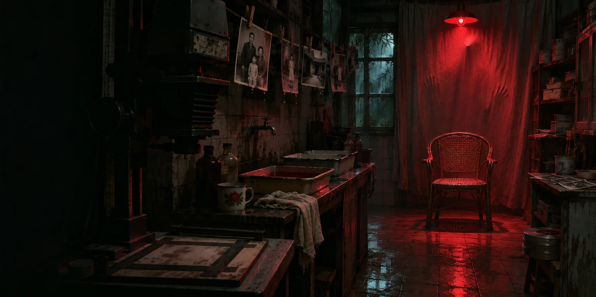
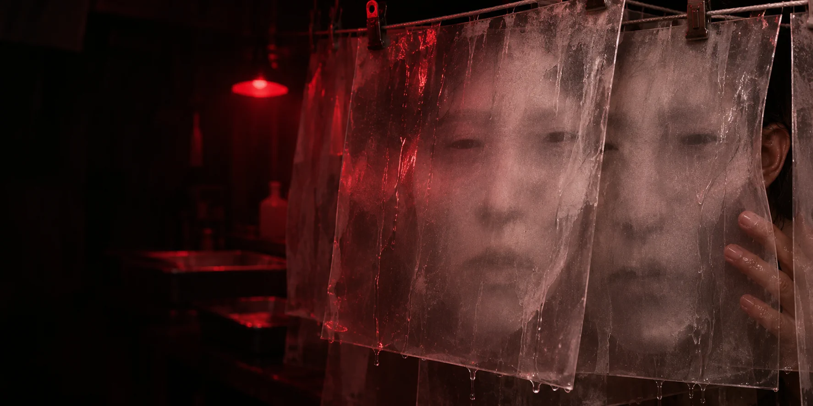
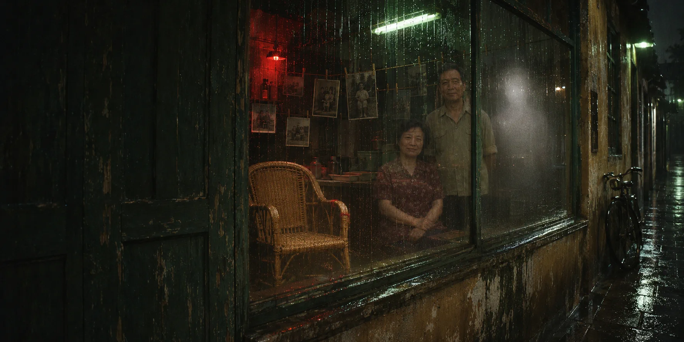

ANALOG RESTORATION STUDIO
让旧照片，重新显影。
从发白的银盐相纸，到藏在抽屉里的家庭底片。
我们手工修复每一张，也保留它原来的样子。
南桥巷手工影像工作室EST. 1987
 原片修复后
原片修复后
拖动分界线，对比修复前后
SELECTED RESTORATIONS
近期修复案例
PROOF SHEET / 27-B
交件前，帮我们校一次样。
南桥巷旧照相馆留底 1998.11.29
南桥
19982004 年加洗附记 · 蓝色圆珠笔
19982004 年加洗附记 · 蓝色圆珠笔
洗两张。一张给他，
一张放在那把椅子上。
工单 27-B · 校样第一联
右手边那把藤椅，
右手边那把藤椅，
你第一眼看见了什么？
老师傅习惯先记第一眼，再拿放大镜。第一联落笔后留底，稍后可以取出来逐字核对。
也可以先不落笔，往下翻。
CARBON DUPLICATE
同一支笔，
两种笔迹。
柜台底下夹着第二联。日期是 1998 年 11 月 29 日。把它和刚才的留底放在一起，最下面那行字没有对齐。
南桥照相馆复写联 · 27-B
托洗物院中合影 一底两印
第一联原话此栏未落笔
第二联存档隔着蜡纸，墨迹透不过来。
复写纸的黑面朝上。墨本应落在另一面。


SAFELIGHT / 27-B
显影盘 · 白纸入液
椅子在暗房里。
红灯下面，那把椅子正对着放大机。右扶手的红线还湿着。托盘里的家人转头看向镜头，椅子却朝着洗照片的人。
COLLECTION RECEIPT
